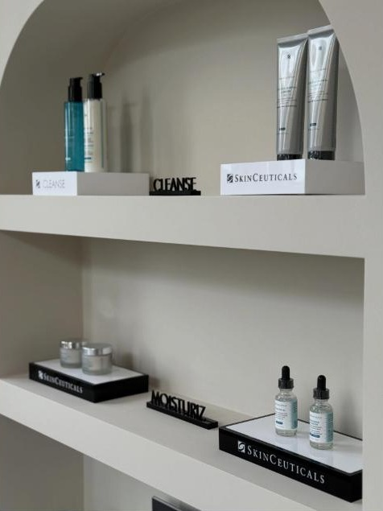

Botox, fillers en skinboosters door BIG-geregistreerde cosmetische artsen, aangevuld met professionele huidverzorging door een cosmetoloog.

Bij Zalat Clinics werk je met BIG-geregistreerde cosmetische artsen. Sinds kort kun je ook terecht bij een cosmetoloog die werkt met de professionele huidverzorgingsproducten van SkinCeuticals.
Voor een frisse, rustige uitstraling, ook gericht op bijvoorbeeld de kaaklijn (masseter).
Lipfillers en gezichtscontouren, zacht en natuurlijk uitgevoerd.
Skinboosters en polynucleötiden voor een betere huidkwaliteit.
Bekijk de behandelingen in de online agenda.
Kies een tijdstip dat jou uitkomt.
Ontvang persoonlijk advies en een behandeling op maat.
Boek direct online via de agenda van Zalat Clinics.